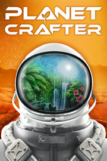

The Planet Crafter
Detalles
|  | |
| Tiempo de juego | No Jugado |
| Última actividad | Nunca |
| Añadido | 11/6/2024 15:35:16 |
| Modificado | 11/8/2024 17:41:21 |
| Estado de finalización | No Jugado |
| Librería | Playnite |
| Fuente | 2TB GAS |
| Plataforma | PC (Windows) |
| Fecha de lanzamiento | 4/10/2024 |
| Puntuación de la Comunidad | 94 |
| Puntuación de la Crítica | |
| Puntuación de usuario | |
| Género | Aventura |
| Desarrollador | Miju Games |
| Editor | Miju Games |
| Característica | Compat. Total Con Mando Cooperativo Cooperativo En Línea Logros De Multijugador Préstamo Familiar Un Jugador |
| Enlaces | Punto de encuentro Discusiones Guías Noticias Página de la tienda PCGamingWiki Logros |
| Tag | Automatización Aventura Buena trama Ciencia ficción Construcción Construcción de bases Cooperativos Cooperativos en línea Espacio Exploración Extraterrestres Fabricación Gestión de recursos Mundo abierto Primera persona Sandbox Simulador inmersivo Supervivencia Supervivencia en mundo abierto Un jugador |
Descripción

DE 1 A 10 JUGADORES
Embárcate en la experiencia en solitario o con hasta diez amigos en el cooperativo en línea. Tu misión es sobrevivir en un planeta hostil y convertir un páramo desértico en un lujoso paraíso. ¡La terraformación es el único modo de conseguirlo!
DE HOSTIL A HABITABLE
Se te ha enviado a un planeta hostil con una misión: hacerlo habitable para los humanos. Tendrás que sobrevivir, obtener recursos, construir tu base y máquinas que calienten el planeta, crear una atmósfera rica en oxígeno y, con el tiempo, usar la geoingeniería para adaptar todo el planeta.SOBREVIVE, RECOLECTA, FABRICA Y EXPLORA
Obtén minerales y recursos para sobrevivir. Fabrica las herramientas que necesitarás para cumplir la misión. Explora los restos de naves estrelladas y diversas ruinas para familiarizarte con un planeta lleno de misterios.
CONSTRUYE TU PROPIA BASE
¡Necesitarás una base y todo tipo de máquinas para sentirte como en casa y poder dotar de nueva vida al planeta! Avanza por los diversos niveles de construcción para mejorar y ampliar tu base y explora el planeta más a fondo.
ATRAE A LA VIDA
A medida que terraformas el planeta al aumentar el calor, el oxígeno y la presión, irás viendo aparecer diversas formas de vida. Sé testigo de los primeros signos de vida con el musgo y los insectos y, posteriormente, desata todo el potencial del planeta con animales y densos bosques.VARIOS MODOS DE DIFICULTAD
Elige el nivel de dificultad que mejor se amolde a tus necesidades, desde experiencias más relajadas a otras más extremas. Juega con las configuraciones predefinidas a la hora de crear una nueva partida y experimenta las infinitas posibilidades del juego.CARACTERÍSTICAS
- Multijugador: Sobrevive por tu cuenta o con amigos (de 1 a 10 jugadores en el cooperativo en línea).
- Supervivencia: Mecánicas de sed, oxígeno, temperatura y salud.
- Construcción de la base: Refúgiate de un entorno hostil y amplía la exploración.
- Fabricación: Equipo, herramientas y comida te ayudarán a sobrevivir.
- Terraformación: ¡Convierte un planeta hostil en un paraíso habitable!
- Construye máquinas para crear presión atmosférica y generar calor en el planeta.
- Crea una biosfera con oxígeno respirable.
- Observa cómo cambia el entorno a medida que avanzas en la terraformación.
- Criaturas: Crea vida descifrando extractos de ADN y combinándolos para crear tus propios animales.
- Naves estrelladas que se generan procedimentalmente: Explóralas y encuentra infinidad de botines raros.
- Experiencia relajante sin violencia: El único enemigo al que tendrás que enfrentarte será el entorno hostil.
- Varios niveles de dificultad para ajustarla a tus necesidades.
- Configuraciones predefinidas ajustables para tener una experiencia diferente en cada partida.
- Modo creativo.